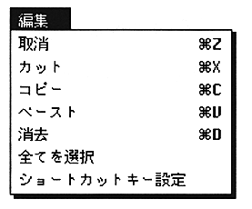
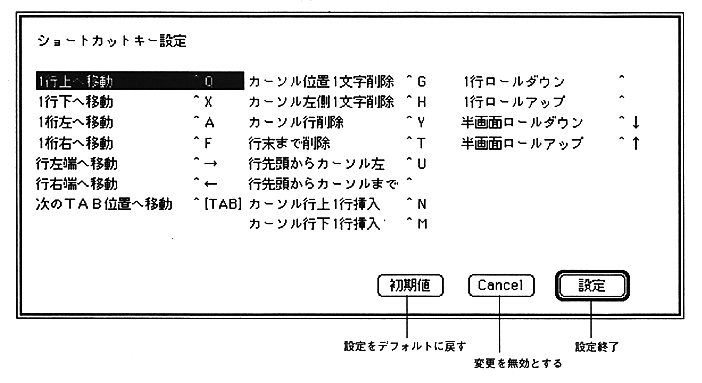

Return to previous page ｜ Return to menu ｜ Go to next page
-
Edit menu
- The “Edit” menu provides standard Macintosh editing commands (Cut, Paste, etc.) and a function for customizing keys used in the editor.
The Undo, Cut, Copy, Paste, and Select All commands are standard Macintosh commands and are not described here.

-
Shortcut key setting
- A shortcut key is assigned to each command in the “Special” menu, but this setting can be changed with this command.

Return to previous page ｜ Return to menu ｜ Go to next page